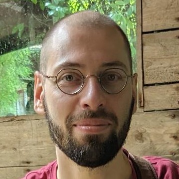

WP4 L'IA et le traitement du langage naturel (NLP) et les spécificités des corpus et des données en sciences humaines et sociales
Claire Placial
Professeure des universités
Écritures

Pierre Willaime
Ingénieur de recherche CNRS
Archives Henri Poincaré
Les progrès majeurs réalisés en linguistique informatique et en apprentissage automatique ouvrent la voie à de nouveaux défis et à de nouveaux domaines de recherche pour les sciences humaines. Cela implique de nouveaux modèles de collaboration entre l'informatique, les mathématiques et les sciences humaines, notamment dans le domaine du traitement des données textuelles, que ce soit en littérature, en traductologie, en linguistique, en psychologie, en sociologie ou en histoire.
Plusieurs projets déjà engagés sur ces questions (SHERBET, BENTO, SCRIBES, etc.) ont été lancés et ouvrent des pistes de recherche qui méritent d'être approfondies, notamment pour initier des collaborations sur de nouveaux thèmes. Nous proposons, à titre d'exemple, trois axes de recherche : 1. la philologie computationnelle ; 2. la reconnaissance d'écriture manuscrite (HTR) ; 3. le Web sémantique.
La documentation ancienne présente des problématiques qui lui sont propres : écriture dans des langues rares ou peu documentées (hébreu, grec koinè, araméen, syriaque, etc.), supports souvent fragmentaires et difficiles à lire, traditions textuelles transmises à la main impliquant d'importantes variations génétiques au cours de leur transmission.
La production d'éditions critiques ou l'analyse d'ensemble des traditions textuelles suppose un travail d'analyse pour lequel il est nécessaire de développer des outils d'étiquetage morpho-syntaxique automatisé (supervisé ou non supervisé — POS Tagging), d'étiquetage sémantique et d'auto-alignement des textes, permettant une collation automatique des variantes (collatex), suivie d'un apprentissage automatisé pour l'analyse et la classification des variantes textuelles entre les différents témoins, ainsi que la modélisation des pratiques scribales (ex. projet BENTO).
Lorsque les données textuelles sont numérisées, cela ouvre la possibilité de développer des algorithmes spécifiques pour reconstituer les arbres généalogiques des témoins textuels, en améliorant par exemple les algorithmes de phylogénie, en les combinant avec l'utilisation de distances dans des espaces sémantiques construits à partir de plongements textuels (textual embeddings).
Les avancées récentes dans le domaine des plongements textuels ouvrent de nouveaux champs de recherche en analyse du discours. Elles favorisent les recherches sur l'extraction et la classification des différentes sources ou des différents auteurs au sein d'écrits souvent composés de compilations ou de recompositions fondées sur des traditions plus anciennes. Ces avancées permettent également d'identifier et de classer les textes selon leurs caractéristiques stylistiques et sémantiques, soulevant ainsi des questions cruciales sur l'attribution d'un texte à un auteur.
Un champ de recherche important concerne l'analyse automatique des traditions textuelles conservées à travers différentes traditions linguistiques : alignement des textes, analyse des modèles de traduction, profilage des traductions, etc.
Le développement de modèles de segmentation et de reconnaissance de l'écriture manuscrite (HTR) donne accès à de nouveaux corpus historiques et pose la question de leur exploitation à grande échelle. Ces corpus nécessitent des analyses spécifiques et une adaptation des traitements linguistiques préexistants, majoritairement conçus pour des données nativement numériques. L'appropriation de ces modèles et outils par la communauté des sciences humaines et sociales constitue un enjeu majeur. Elle rejoint à la fois des besoins classiques des disciplines historiques (annotation, collation, etc.) et de nouvelles possibilités. Le projet INSIGHT vise à structurer et à accompagner les transformations apportées par l'IA sur les corpus langagiers patrimoniaux.
Une approche innovante consiste à modéliser les informations contenues dans les documents historiques à l'aide des technologies du Web sémantique. L'extraction semi-automatique des connaissances et leur formalisation sous forme de triplets RDF permettent une exploration fine des corpus à l'aide d'outils de requête et d'exploration fondés sur le langage SPARQL. En nous appuyant sur les travaux menés depuis 2017 sur le corpus de la correspondance de Henri Poincaré, nous proposons d'étendre et de développer ces processus et ces analyses.